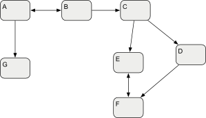
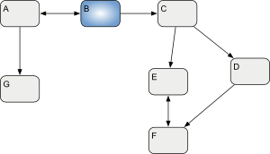
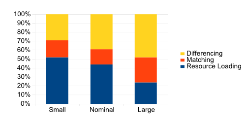
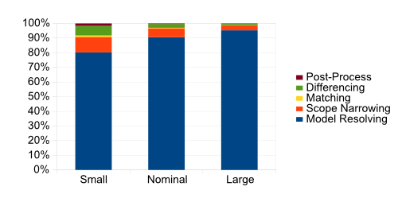

We name "logical model" a set of physical resources that form a coherent business-related model. For example, we could say that a given Java class forms a coherent logical model only when it is linked with all of its imported classes.
In the case of EMF, we name a logical resource (or model) the EMF resource loaded in memory, as opposed to a physical resource (or file) that is merely the serialization of this model on disk. A given EMF model can reference a number of other models, and it will be incoherent, or even sometimes corrupted, if these other models are not loaded in memory. In EMF, a given model can be serialized as a single file, fragmented in multiple files on disk, or reference multiple files. The logical model is only coherent when the whole set of its physical files is accessible.
If we take it in reverse, a logical model is a set of elements that reference each other :
|
|
| A Logical Model is a set of inter-related elements. |
When these elements are serialized on disk, they may be split across multiple files, as long as the references between these files can be resolved :

|
| Logical Model split in the files A, B, C, D, E, F and G. |
The Eclipse Team project (referred as "Team" in this document) provides an API named "model providers". This API allows implementers to define the semantics of what is a "logical model" in his case. In short, it allows us to link any number of physical resources to a given "starting" file.
Technically, this is done through an extension point that can be implemented by anyone and that will adapt a file (a workspace IResource) to a set of files (a Team ResourceTraversal). The model providers can be queried by anyone who calls actions on workspace files in order to determine if this action can be done against a single file or if it should be executed against a set of files.
Team only provides the API to define logical models. It is then the responsibility of its clients to properly query the model provider when calling an action. In the context of EMF Compare, we are interested in the "compare" actions. These actions are contributed by the repository providers (CVS, EGit, Subversive, Subclipse, Clearcase...). It is their responsibility, within the code of these actions, to query the model providers in order to determine if the selected files can be compared alone... or if they need to be compared along with a set of others.
In the case of EMF Compare, the above limitations were a show-stopper. EMF models cannot simply be reduced to single files as that would totally break their consistency when trying to merge them.
EMF Compare now uses its own implementation aiming at this same goal, that we named synchronization model. In short, instead of expecting the repository providers to query the model providers, EMF Compare will take the file (or set of files) that it is fed and expand it to the full logical model by querying the synchronization model.
This custom implementation also allows us to not only resolve the whole logical model of a given physical file, but also to determine which parts of this model should be included in the comparison scope. Indeed, under the semantics of EMF, if we can determine that two physical files are binary identical in their two distinct revisions, then we also know that the part of the logical model they represent are identical themselves. There would be no need to compare them. This allows us to save both time and memory, killing two birds with one stone.
When the user selects a file A in his workspace and asks to compare it with a remote revision (for example, the "latest from HEAD"), the repository provider (CVS in this case) fetches the remote content of A in the selected revision (we'll call it A'). Once the remote revision fetched, the repository provider considers his work finished and feeds EMF Compare the two files (A and A') and lets it begin his own work. This is fine and dandy when the logical model of A only spans a single file ... but if A references another file B, then the comparison will not be coherent as EMF Compare operates on the logical model, not on its serialized form.
Thus, EMF Compare will not immediately launch the comparison of the files it is fed. Before any further work, it will query the synchronization model with these files in order to expand them to their whole logical model.
Once the full logical model is resolved, EMF Compare can properly do the comparison work. Since we know of all fiels that compose our model, we'll also be able to safely merge differences without compromising the coherence of the whole.
However, even if we can launch EMF Compare at this point, the synchronization model also offers us one more possibility. EMF models can span thousands of physical files sometimes amounting to such a huge number of elements that it would not fit into the machine's memory if we tried to load it as a whole. The synchronization model knows how to retrieve the content of all of these files; it can also be used to minimize the set to only those which really did change. Indeed, we consider that files that are binary identical wield yield fragments of the logical model that will also be strictly identical. By removing these "identical" fragments, we can drastically limit the size of the logical model we'll load into memory, compacting it to a size that will fit before we launch the comparison on the remaining fragments.
In other words, the synchronization model allows us to compare models with a time and memory cost that is relative to the size of the actual changeset instead of having it depend on the input models size.
Let's consider the following sample :
| Origin | |
|---|---|
|  | |
| Left | Right |

|
 |
Each of the three sides is an EMF model composed of 7 fragments. Origin is the common ancestor of left and right. The blue-colored fragments are those that actually present differences (so D and G have been modified in the "left" copy while only B has been modified in the "right" copy).
In order to compare these three models together, we would normally need to load all 21 fragments in memory. However, with the help of the synchronization model we can narrow it down to the modified fragments only. What we'll really load, then, are the following fragments for each three sides :

In other words, we are actually only loading 9 fragments out of the initial 21. This amounts to 58% less memory usage if we consider all fragments to be of equal "weight". And this is only for small models; the ratio of saved memory really going up for extremely large models. Of course, all of these objects that we are not loading in memory are all objects that we no longer need to compare, bringing an incredible performance boost along with the memory gain.
When we got EMF Compare 1.3 out, we did some performance snapshots of what we had on some UML models with known counts of elements. Here were the specifications of the structure of the three test models. "fragments" are the number of fragmented files, the rest are the UML elements contained by the samples (spread out within the fragments) :
| Small | Nominal | Large | |
|---|---|---|---|
| Fragments | 99 | 399 | 947 |
| Size on disk (MB) | 1.37 | 8.56 | 49.9 |
| Packages | 97 | 389 | 880 |
| Classes | 140 | 578 | 2169 |
| Primitive Types | 581 | 5370 | 17152 |
| Data Types | 599 | 5781 | 18637 |
| State Machines | 55 | 209 | 1311 |
| States | 202 | 765 | 10156 |
| Dependencies | 235 | 2522 | 8681 |
| Transitions | 798 | 3106 | 49805 |
| Operations | 1183 | 5903 | 46029 |
| Total element count | 3890 | 24623 | 154820 |
Following are the time and memory required to compare each of the model sizes (the model is copied, randomly modified, then the copy is compared with its original) with two versions of EMF Compare. The 'old' 1.3, and the 2.1 that fully uses the logical model capabilities.
Note that these were "CPU time" measures : we used a Java profiler to measure the duration of the comparison process, without regard to the actual wall time : we measured the time that the CPU was active during this process. As EMF Compare 1 was not multi-threaded, this means that these figures are slightly lower than the time actually perceived by the user for the same action. (See Wall Time and System Time on wikipedia.)
| Small | Nominal | Large | |
|---|---|---|---|
| Time (seconds) | 6 | 22 | 125 |
| Maximum Heap (MB) | 555 | 1019 | 2100 |
These figures could be broken down in the following three main phases :

This meant that the memory management of EMF Compare was really limiting as soon as we were dealing with large models (more than 2GB of heap space needed to load models that "weigh" 50 MB on disk). Furthermore, the main time sink was the differencing process, and that could also be narrowed down to the fact that there were plainly too many object to compare : for two-way comparisons, we were loading the model twice, for three-way comparisons, three instances of the model were loaded in memory. Not only that, but we were iterating twice on all models (one for matching, one for differencing).
The full report can be downloaded from here.
Note that these are "wall time" measures : we used a stopwatch to time the duration of the comparison, from a click on the "compare with > each other" action to the opening of the comparison editor.
| Small | Nominal | Large | |
|---|---|---|---|
| Time (seconds) | 5 | 13 | 48 |
| Maximum Heap (MB) | 262 | 318 | 422 |
These figures can be broken down in 5 main phases :

Okay, this graph does not leave much to interpretation. The model resolving time totally dwarfs the other comparison phases. That was actually our aim for EMF Compare 2 : model resolving represents the bulk of the I/O operations of EMF Compare, and we aimed at reducing the actual comparison to the utmost minimum time. So not only are we greatly improving the memory cost (only 400MB of heap space to compare something that required more than 2GB with EMF Compare 1), but we also reduced the comparison time (and the scalability) to a great extent.
The use of our own implementation effectively allows us to bypass some of the aforementioned limitations since we no longer rely on the repository providers in our specific case.
However, if we can enforce the coherence of the models during the comparison, this approach still does not take into account the other aspects of collaboration with models. Even if comparing and merging two linked models is fine, it is still the repository provider's responsibility to query Team's model providers in order to "commit", "push", or even "replace" the models as a whole instead of acting on single physical files. Thus, most of the limitations mentioned above still hold, though we fixed those that applied to comparison actions.
As shown with the above graphs, the most important remaining time sink is the resolution of the logical model. This is partly due to the I/O operations performed during this phase, but first and foremost it is due to the parsing of the XMI representation of the files we used (UML fragments) as EMF models. EMF Compare needs to actually load all fragments of the logical model as EMF model fragments in order to determine their cross-resource references, which represent other parts of the logical model that will need in turn. This phase could be improved by parsing the raw XMI data to find all of these cross-resource references without parsing the actual EMF elements of which they are a part.